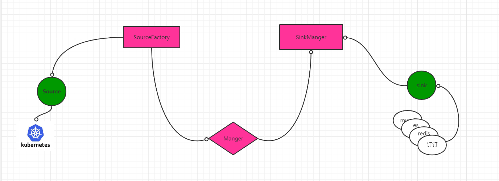
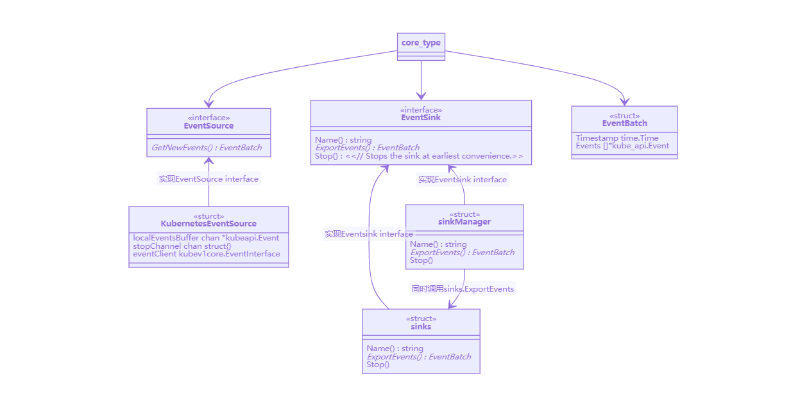
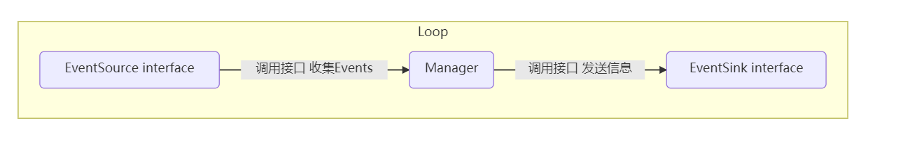
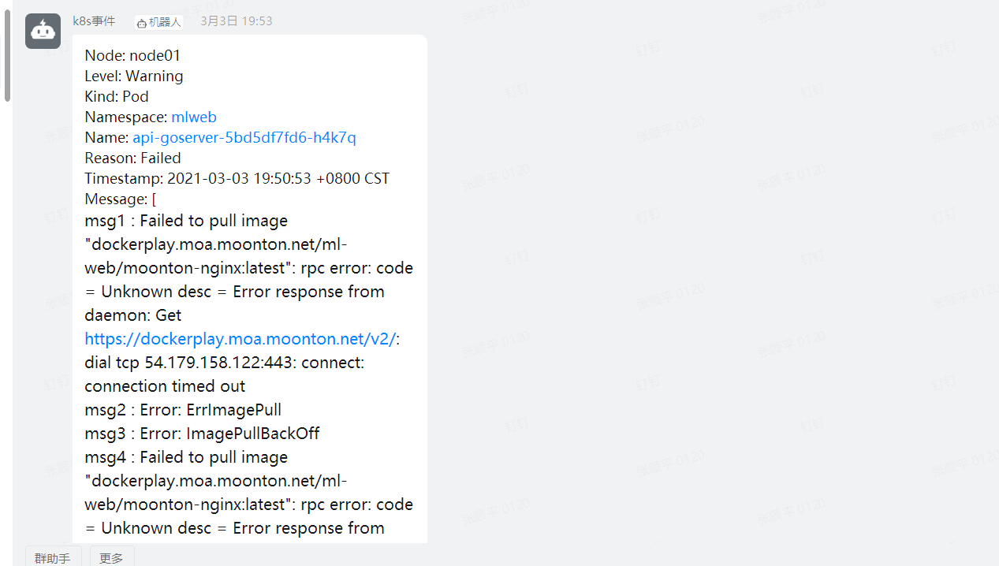

写在前面
目的
- 总结学习下阿里云kube-eventer项目的编程方法。
- 总结下自己的二次开发思路，方便团队协作，同时也能暴露代码可能存在的问题
kube-eventer介绍
为什么要用kube-eventer
kubernetes集群除了原生组件日志,业务日志之外还会生成集群事件日志。
比如我们创建一个pod，如果pod创建成功，则会显示如下日志：
Events:
Type Reason Age From Message
---- ------ ---- ---- -------
Normal Scheduled <unknown> default-scheduler Successfully assigned default/web-f6fbdd86c-kmzr2 to node02
Normal Pulling 43s kubelet, node02 Pulling image "nginx"
Normal Pulled 18s kubelet, node02 Successfully pulled image "nginx"
Normal Created 18s kubelet, node02 Created container web
Normal Started 18s kubelet, node02 Started container web
由上可知，events事件 记录了一个kubernetes的资源从0-Running经历了哪些事件，一般大规模的kubernetes集群，可以通过收集events事件的耗时，从而来提高kuberentes集群分发性能。
如果一个pod创建**失败，**则其事件日志如下：
Type Reason Age From Message
---- ------ ---- ---- -------
Normal Scheduled <unknown> default-scheduler Successfully assigned default/hello-5759cbd576-kdzpl to node03
Normal Pulling 27m (x4 over 29m) kubelet, node03 Pulling image "1"
Warning Failed 27m (x4 over 29m) kubelet, node03 Failed to pull image "1": rpc error: code = Unknown desc = Error response from daemon: pull access denied for 1, repository does not exist or may require 'docker login': denied: requested access to the resource is denied
Warning Failed 27m (x4 over 29m) kubelet, node03 Error: ErrImagePull
Warning Failed 18m (x41 over 28m) kubelet, node03 Error: ImagePullBackOff
Normal BackOff 3m50s (x107 over 28m) kubelet, node03 Back-off pulling image "1"
由此可以看出，我们如果通过收集pod的events事件，当发生错误的时候，既可以通过收集到Warning事件来多一个维度的分析失败原因。
因为目前官网k8s集群规模不是很大，也未出现分发问题，因此目前收集kubernetes集群事件，可能没有多大的意义，且会造成多余的磁盘浪费，因此使用kube-eventer项目，将产生Warning事件通过钉钉报警通知运维人员，这样能够方便快速定位问题。
kube-eventer 用户视角

核心接口编程逻辑
kube-eventer代码设计架构

kube-eventer 通过接口编程的思想来开发的项目（个人理解），可以通过 core/type.go 查看
简单叙述一下，它定义了两个interface类型的接口（EventSink，EventSource），一个用作收集events的struct 类型
type EventBatch struct {
// When this batch was created.
Timestamp time.Time
// List of events included in the batch.
Events []*kube_api.Event
}
// A place from where the events should be scraped.
type EventSource interface {
// This is a mutable method. Each call to this method clears the internal buffer so that
// each event can be obtained only once.
GetNewEvents() *EventBatch
}
type EventSink interface {
Name() string
// Exports data to the external storage. The function should be synchronous/blocking and finish only
// after the given EventBatch was written. This will allow sink manager to push data only to these
// sinks that finished writing the previous data.
ExportEvents(*EventBatch)
// Stops the sink at earliest convenience.
Stop()
}
我们知道在golang中，只要一个struct实现了一个interface的所有的方法，那么这个struct就可以认为是这个interface类型，因此只需要对应的 SourceFactory SinkManager sinks等定义的struct实现具体的接口，就可以达到泛型编程的目的，这样一来对整个架构的扩展维护非常方便，大致流程如下：

因此可以简单的认为，kube-eventer的项目抽象的看的话，其逻辑可以简单的认为是下面的编程逻辑，比如想接入kafka作为sinks，只需要sinks实现EventSink 的interface即可。

源码分析
代码入口
eventer.go，简洁代码如下，我们看下它做了什么。
func main() {
// 1.申请一个channel，控制主程
quitChannel := make(chan struct{}, 0)
...
...
//2. sources
if len(argSources) != 1 {
klog.Fatal("Wrong number of sources specified")
}
sourceFactory := sources.NewSourceFactory()
sources, err := sourceFactory.BuildAll(argSources)
//3. sinks
sinksFactory := sinks.NewSinkFactory()
sinkList := sinksFactory.BuildAll(argSinks)
for _, sink := range sinkList {
klog.Infof("Starting with %s sink", sink.Name())
}
sinkManager, err := sinks.NewEventSinkManager(sinkList, sinks.DefaultSinkExportEventsTimeout, sinks.DefaultSinkStopTimeout)
// 4. main manager
manager, err := manager.NewManager(sources[0], sinkManager, *argFrequency)
if err != nil {
klog.Fatalf("Failed to create main manager: %v", err)
}
manager.Start()
klog.Infof("Starting eventer")
...
...
...
// 5. 阻塞
<-quitChannel
}
流程如下
- 1.申请一个无缓冲的channel ，用作主程序控制
- 2.初始化SourceFactory 实例，及通过传入参数，初始化一个可以收集kubernetes的控制器
- 3.初始化SinkManager实例，作用是，将收集的kubernetes 集群事件信息存储到指定的接收器中，这里支持的接口有钉钉，es，redis，mysql等
- 4.将新生成的SourceFactory和SinkManager 注册到主manager中去，通过manager.Start()的方式启动整个集群事件监控收集的服务。
- 5.quitChannel用来阻塞服务，当接收到quit信号时候退出。
GetNewEvents实现
kube-eventer实现GetNewEvetns接口，可以对比operator的实现方式，他的本质上也是通过list/watch的方式来获取events.
通过sources/kubernetes/kubernetes_source.go查看，主要代码逻辑如下：
第一步：watch() 逻辑 ，起一个go程，在后台一直运行，他的主要作用是一直，watch kubernetes api 只收集新的evnets事件， 根据 resourceVersion := events.ResourceVersion判断，将新生成的events事件 ，放入localEventsBuffer chan *kubeapi.Event的channel里
第二步：GetNewEvents() 逻辑，根据定义的frequency 的时间窗口变量，定时的将 localEventsBuffer 中的数据 追加到类型为core.EventBatch.Events的切片中去，将这个slice返回。
// Implements core.EventSource interface.
type KubernetesEventSource struct {
// Large local buffer, periodically read.
localEventsBuffer chan *kubeapi.Event
stopChannel chan struct{}
eventClient kubev1core.EventInterface
}
func (this *KubernetesEventSource) GetNewEvents() *core.EventBatch {
startTime := time.Now()
defer func() {
lastEventTimestamp.Set(float64(time.Now().Unix()))
scrapEventsDuration.Observe(float64(time.Since(startTime)) / float64(time.Millisecond))
}()
result := core.EventBatch{
Timestamp: time.Now(),
Events: []*kubeapi.Event{},
}
// Get all data from the buffer.
event_loop:
for {
select {
case event := <-this.localEventsBuffer:
result.Events = append(result.Events, event)
default:
break event_loop
}
}
totalEventsNum.Add(float64(len(result.Events)))
return &result
}
func (this *KubernetesEventSource) watch() {
// Outer loop, for reconnections.
for {
events, err := this.eventClient.List(metav1.ListOptions{})
if err != nil {
klog.Errorf("Failed to load events: %v", err)
time.Sleep(time.Second)
continue
}
// Do not write old events.
resourceVersion := events.ResourceVersion
watcher, err := this.eventClient.Watch(
metav1.ListOptions{
Watch: true,
ResourceVersion: resourceVersion})
if err != nil {
klog.Errorf("Failed to start watch for new events: %v", err)
time.Sleep(time.Second)
continue
}
watchChannel := watcher.ResultChan()
// Inner loop, for update processing.
inner_loop:
for {
select {
case watchUpdate, ok := <-watchChannel:
if !ok {
klog.Errorf("Event watch channel closed")
break inner_loop
}
if watchUpdate.Type == kubewatch.Error {
if status, ok := watchUpdate.Object.(*metav1.Status); ok {
klog.Errorf("Error during watch: %#v", status)
break inner_loop
}
klog.Errorf("Received unexpected error: %#v", watchUpdate.Object)
break inner_loop
}
if event, ok := watchUpdate.Object.(*kubeapi.Event); ok {
switch watchUpdate.Type {
case kubewatch.Added, kubewatch.Modified:
select {
case this.localEventsBuffer <- event:
// Ok, buffer not full.
default:
// Buffer full, need to drop the event.
klog.Errorf("Event buffer full, dropping event")
}
case kubewatch.Deleted:
// Deleted events are silently ignored.
default:
klog.Warningf("Unknown watchUpdate.Type: %#v", watchUpdate.Type)
}
} else {
klog.Errorf("Wrong object received: %v", watchUpdate)
}
case <-this.stopChannel:
watcher.Stop()
klog.Infof("Event watching stopped")
return
}
}
}
}
二次开发改了什么
-
解决官方issue： kube-eventer 原本存在的issue #68,及同一个消息会重复反复发送，但是与阿里云产品冲突，因此官方不打算解决这个问题
-
增加合并消息功能： 合并一段时间内 level=Warning 的events，统一发送
-
自定义消息息的markdown格式。
1. 解决官方issue：
在 core/type.go增加去重接口
func (eventBatch *EventBatch) DistinctSameResourceEvent() {
tempMap := make(map[string]bool)
var finalEvents []*kube_api.Event
for _, event := range eventBatch.Events {
involvedObject := event.InvolvedObject
if &involvedObject == nil {
continue
}
resourceName := involvedObject.Name
reason := event.Reason
msg:=event.Message
key := resourceName + reason + msg
if _, contain := tempMap[key]; !contain {
// fmt.Printf("key: %s \n", key)
tempMap[key] = true
finalEvents = append(finalEvents, event)
}
}
if len(finalEvents) > 0 {
eventBatch.Events = finalEvents
}
}
在sinks/manager中每次发送给sinkManager时候，去重
func export(s core.EventSink, data *core.EventBatch) {
...
data.DistinctSameResourceEvent()
...
s.ExportEvents(data)
}
2.合并Warning 消息
增加sinks/dingtalk/dingtalkbuffer.go. 在不改变原逻辑的基础上，通过开关变量 bufferwindows 来控制是否开启 合并消息
bufferwindows=0 代表了不开启，则用原来的方式发送；bufferwindows=10 代表的开启聚合， 聚合创建时间=frequency*bufferwindows,比如 frequency=10s ,bufferwindows=10,即表示聚合这100s内的事件级别为Warning 的消息发送给钉钉
我的具体实现逻辑，将一段窗口时间内的events信息，落地到本地缓存，通过数据转换的方式，对message相同的资源合并，以下是落地去重逻辑
//构造新的类型，用作合并消息去重
type BufferEventBatch map[string][]*kube_api.Event
//去重内存聚合逻辑
func DumpbufferEventBatch(batch *core.EventBatch) {
klog.V(2).Info("start count:",count)
i:=0
j:=0
for _, event := range batch.Events {
// only handler Warning Buffer
if event.Type == "Warning" {
if len(BbufferEventBatch)!=0{
//1.if event.name is new then append
if _,contain:=BbufferEventBatch[event.InvolvedObject.Name];!contain{
BbufferEventBatch[event.InvolvedObject.Name] = append(BbufferEventBatch[event.InvolvedObject.Name], event)
continue
}
//2.if event.name is exits ;then diff message
for _,ev:=range(BbufferEventBatch[event.InvolvedObject.Name]){
j=j+1
if ev.Message != event.Message{
i=i+1
}
}
if i==j{
klog.V(2).Info("i:",i,"j:",j)
BbufferEventBatch[event.InvolvedObject.Name] = append(BbufferEventBatch[event.InvolvedObject.Name], event)
}
i=0
j=0
}else{
//if lenth=0;then append
BbufferEventBatch[event.InvolvedObject.Name] = append(BbufferEventBatch[event.InvolvedObject.Name], event)
}
}
}
klog.V(2).Info("count:",count)
}
//聚合发送给钉钉逻辑
func (d *DingTalkSink) ExportBufferEvents(batch core.BufferEventBatch) {
klog.V(2).Info("BbuferEventBatch len :",len(batch))
if count >=ArgDDbufferWindows {
count =0
if len(BbufferEventBatch)!=0{
for _, bufferEvent := range BbufferEventBatch {
d.DingBuffer(bufferEvent)
// add threshold
time.Sleep(time.Millisecond * 50)
}
BbufferEventBatch=core.BufferEventBatch{}
count=0
}
}
}
测试截图：

资源使用量：pod本身只带limit控制，测试下来资源使用率也较少

我的仓库地址
https://github.com/zhangshunping/kube-eventer
部署方式
git clone https://github.com/zhangshunping/kube-eventer
cd kube-eventer
make docker-container VERSION:v3 ## 编译生成docker image
docker push *** ## 推送docker image
kubectl apply -f deploy/deploy.yaml #生成kube-eventer资源
后期可迭代功能
- 可以增加钉钉的抑制功能。比如一台机器宕机了，这时候可以通过抑制的方法，抑制这台机器上的钉钉资源报警。
- 可以增加报警冷却功能， 解决当同一个资源反复报警。